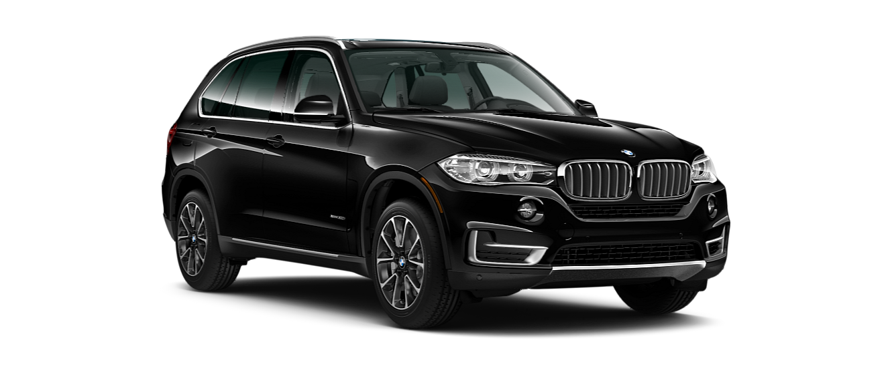

Porshe Cayenne

more images
| |||
|

more images |
The BMW X6 is a mid-size luxury crossover by German automaker BMW. The first generation (E71) was released for sale in April 2008 for the 2009 model year The X6 was marketed as a Sports Activity Coupe (SAC) by BMW. It combines the attributes of an SUV (high ground clearance, all-wheel drive and all-weather ability, large wheels and tires) with the stance of a coupé (styling featuring a sloping roof). It was based on the previous generation BMW 5 and 6-series. E71 development began in 2003 under Peter Tuennermann, after start of E70 X5 development in 2001. Design work by E70 X5 designer Pierre Leclercq was frozen in 2005, with test mules being run from the summer of 2005 and prototypes being tested from late 2006. Production began on December 3, 2007. |
||
| |
|
more images |
The Porsche Cayenne (Type 9PA [Designated 955 in online forums, not recognized by Porsche Cars AG]) is a mid-size luxury crossover sport utility vehicle produced by the German manufacturer Porsche since 2002, with North American sales beginning in 2003. It is the first V8-engined vehicle built by Porsche since 1995, when the Porsche 928 was discontinued. It is also Porsche's first off road Varient sports car since its Super and Junior tractors of 1950s, and the first Porsche with four doors. Since 2008, all engines have featured direct injection technology.. |